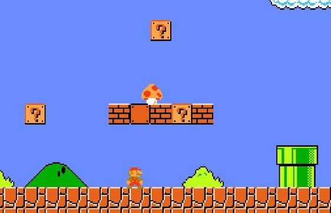
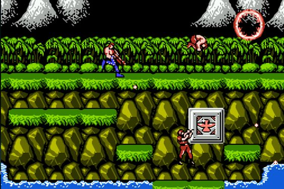
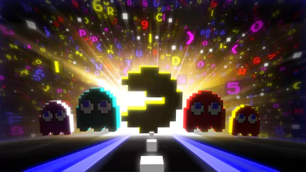

Juegos Retro
La cultura retro de los videojuegos se refiere a la apreciación y el interés por los videojuegos y las consolas clásicas de las décadas de 1970, 1980 y 1990. Incluye la nostalgia por los juegos de esa época, la colección de juegos y consolas antiguas, la emulación de juegos en plataformas modernas, y la preservación de la historia de los videojuegos. Los aficionados a esta cultura disfrutan de la simplicidad y la jugabilidad de los juegos clásicos, así como de su estilo visual y auditivo único. Además, la influencia de los juegos retro en la industria de los videojuegos sigue siendo notable en muchos aspectos del diseño y las mecánicas de juego de los juegos modernos.
Juegos populares
Mario Bros
En la época retro, "Mario Bros" fue uno de los videojuegos más icónicos y populares. Fue creado por Nintendo y lanzado por primera vez en 1983. El juego presentaba a Mario y Luigi, dos fontaneros italianos, que tenían que enfrentarse a criaturas extrañas en las alcantarillas de Nueva York. El objetivo era derrotar a los enemigos golpeándolos desde abajo y luego lanzándolos fuera de la pantalla. El juego también presentaba la mecánica de los "Pow Blocks", que podían ser golpeados para derrotar a múltiples enemigos a la vez. "Mario Bros" sentó las bases para la serie de juegos de "Super Mario", que se convertiría en una de las franquicias más exitosas de la historia de los videojuegos.

Contra
Juego clásico de la época retro lanzado en 1987 por Konami. Es un juego de disparos en 2D de desplazamiento lateral que se hizo famoso por su acción intensa y su dificultad desafiante. El juego sigue a dos soldados, Bill Rizer y Lance Bean, en una misión para detener a una organización alienígena malvada. "Contra" es conocido por su jugabilidad rápida, la posibilidad de jugar en modo cooperativo y la amplia variedad de armas disponibles para los jugadores. También es recordado por su famoso código de trucos, el "código Konami", que proporcionaba vidas extra a los jugadores. "Contra" se convirtió en un clásico instantáneo y sentó las bases para muchos juegos de disparos que vinieron después.

Packman
Es uno de los juegos más icónicos de la época retro, lanzado por Namco en 1980. En el juego, controlas a Pac-Man, un personaje redondo y amarillo que debe comer puntos en un laberinto mientras evita ser atrapado por cuatro fantasmas. El objetivo es comer todos los puntos para avanzar al siguiente nivel. Además de los puntos normales, hay puntos grandes que permiten a Pac-Man comer a los fantasmas por un corto tiempo. "Pac-Man" fue un éxito instantáneo debido a su jugabilidad simple pero adictiva, así como a su diseño colorido y atractivo. Se convirtió en un ícono de la cultura pop y en uno de los videojuegos más influyentes de todos los tiempos.
